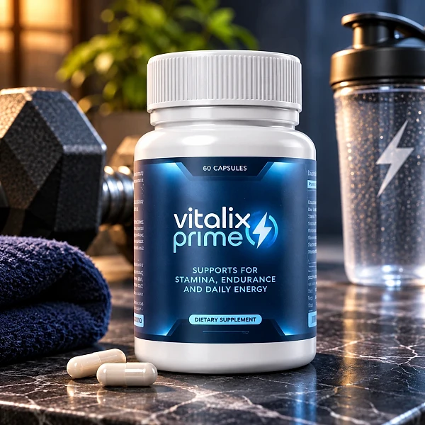
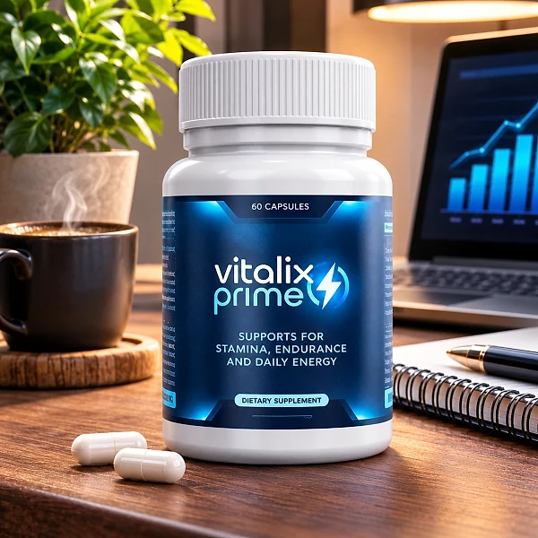

What Is Vitalix Prime And How Does It Work?
Vitalix Prime is a dietary supplement for men in capsule form, presented on the official website with the slogan “Power for Men!”. According to the website, one jar is a 30-day supply, and at two capsules a day that means 60 capsules in each jar.
The formula lists eight ingredients with their amounts: niacin (vitamin B3), zinc, L-carnitine tartrate, citrulline malate, pine bark extract, maca root extract, grape skin extract and saffron extract. The full list is in the ingredients section below.
The website does not explain in detail how the capsules are supposed to work. It describes Vitalix Prime as “specifically designed to support your male body” and highlights tested ingredients, high quality and a unique formula. Citrulline and pine bark are often associated with circulation, L-carnitine and niacin with energy metabolism, and maca with stamina and well-being, but the website shows no studies on the product itself.
In practice, the capsules are designed to support energy, stamina and vitality as part of a healthy routine with good sleep, regular exercise and a balanced diet. They are not a substitute for medical treatment, and results may vary from person to person.
The website is run by the Dutch company Hegumate B.V., which sells Vitalix Prime under its own brand and ships with PostNL to more than twenty countries, including New Zealand.
According to the FAQ, an order is a one-time purchase, not a subscription: you are charged once and there are no recurring payments. The website also describes a 30-day money-back guarantee, which is explained in the refund policy section.
As with any supplement, these statements have not been evaluated by the Food and Drug Administration, and Vitalix Prime is not intended to diagnose, treat, cure, or prevent any disease. Men who have had ongoing concerns about energy or performance should talk to a doctor, since there may be causes that need to be checked.
Vitalix Prime Ingredients
The ingredient table on the official website lists the following in Vitalix Prime:
Niacin (vitamin B3), 40 mg: a B vitamin that contributes to normal energy metabolism.
Zinc (as zinc oxide), 22 mg: an essential mineral involved in normal fertility and in maintaining normal testosterone levels in the blood.
L-carnitine tartrate and citrulline malate, 300 mg each: amino acid compounds often used in supplements for exercise and endurance.
Pine bark extract, 200 mg: a plant extract rich in polyphenols.
Maca root extract, 300 mg: a root from the Andes traditionally used for stamina and well-being.
Grape skin extract, 30 mg, and saffron extract, 10 mg: plant extracts with natural antioxidants.
The website spells some names differently (“L-carnite Tartare”, “Citruline Malate”), but they correspond to the usual L-carnitine tartrate and citrulline malate. It does not say whether the amounts are per capsule or per daily dose of two capsules.
There is also no complete ingredient panel showing the other components, such as the capsule shell or fillers. Read the label on the jar you receive and ask customer service if anything is unclear.
Vitalix Prime Side Effects
According to the official website, side effects are rare: dry mouth may occur in up to 1 in 1,000 people. The website also states that the capsules do not affect high blood pressure and that you can drive as usual, while asking everyone to discuss any illness with their doctor.
Some ingredients are still worth knowing about. Niacin can cause a flush, a temporary warm feeling and redness of the skin. The listed amount of zinc, 22 mg, is close to the upper level of 25 mg a day set by the European Food Safety Authority for adults, so do not combine the capsules with other zinc supplements without asking a doctor or pharmacist.
Citrulline and pine bark are associated with blood vessel function. Anyone who takes blood pressure medication, nitrates for chest pain or blood thinners should therefore talk to a doctor before use, as should anyone with heart disease or another chronic condition.
Stop using the capsules and seek advice if you notice headaches, dizziness, a racing heart, stomach upset, a rash or any other unusual reaction. Natural extracts such as saffron and maca can also cause allergic reactions in sensitive people. Keep the jar out of the reach of children.
Vitalix Prime Dosage
According to the official website, you take two capsules once a day, whole and without chewing, with two large glasses of water (at least 500 ml). Two capsules is also the maximum recommended amount per day.
The capsules are taken about 15 to 30 minutes before a meal. The home page recommends the largest meal of the day, while other pages mention lunch or dinner and breakfast or dinner, so the simplest approach is to pick one regular time and stick to it.
If you have trouble swallowing capsules, the website says you can open them and stir the contents into drinking water. If you forget a dose, do not take a double dose next time; simply continue as usual the following day.
One jar lasts 30 days at two capsules a day. The website recommends consistent, long-term use for optimal results, but it does not promise any timeframe, and the effect varies from person to person.
The English version of the website says the capsules are suitable only for men aged 18 and older. Store the jar in a dry place, tightly closed and out of the reach of children, and never take more than the recommended amount, even after a missed day.
Vitalix Prime – Refund Policy
The order page of Vitalix Prime promises a 30-day money-back guarantee: you can send the product back and get your money back, “no questions asked”.
The return policy is more detailed. Goods can be returned within 30 calendar days of receipt, but they must be sealed, unopened and unused in the original packaging. The FAQ also says the guarantee applies to unopened products.
Before sending anything, contact customer service by email at support@get-vitalix.com; without prior contact, a refund cannot be guaranteed. Returns go to Vitalix Prime, Curieweg 10, 2408 BZ Alphen aan den Rijn, in the Netherlands, and return shipping is paid by the customer.
Important for New Zealand: for returns from outside the EU, the customer is responsible for all return costs, including shipping, customs clearance, import duties and VAT. A returned parcel that arrives with unpaid charges may be refused, and in that case no refund is issued.
According to the return policy, the amount is refunded within 15 days of receiving the return, while the terms speak of no later than 30 days. Parcels that are refused or not collected are sent back, and a return handling fee is deducted from the refund. Damaged goods must be reported with photos within 7 days of delivery.
An order can be cancelled before it ships by emailing customer service with the subject “Cancellation” and your order number; according to the website, your card is charged only after the parcel leaves the warehouse.
Vitalix Prime Customer Reviews
-
Andreas — United KingdomVerified Purchase – 6 Bottles
“I’ve tried many different products, but nothing really worked. After just a few weeks, I felt like I was 20 again! This product is highly recommended. Thank you so much!”
-
Thomas — United KingdomVerified Purchase – 6 Bottles
“I saw Vitalix Prime on Facebook and thought it was just another product for men. But I decided to try it, and it worked better than I expected. I’m 56, but I feel like I’m 30 again!”
-
Sebastian — United KingdomVerified Purchase – 6 Bottles
“I saw incredible results in just a few weeks! My energy and motivation have significantly improved. The delivery was quick, and the customer service is fantastic. I’ll definitely keep using it!”
Vitalix Prime – Where To Buy
Vitalix Prime is sold through its official website, get-vitalix.com, which has an English version and accepts orders to New Zealand. The website does not list any pharmacy, store or marketplace as a seller.
Orders ship with PostNL, and once the parcel reaches New Zealand the final delivery is handled by the local postal service. A tracking link is emailed as soon as the order leaves the warehouse. The delivery time stated on the website, 3 to 5 working days, refers to the EU, and the shipping policy says that customs duties, import taxes or clearance fees for deliveries outside the EU are the customer’s responsibility.
Capsules with similar names and packaging may appear with other sellers online. Those jars cannot be traced back to the brand, there is no way to know what is inside them, and they are not covered by the guarantee or by customer service.
Before paying, check that the address bar shows the official domain, and keep the order confirmation with your order number, which you will need for any question, cancellation or return.
To ensure you’re getting the authentic product, most users choose to visit the official website.
Is Vitalix Prime A Scam?
Based on the official website, Vitalix Prime does not appear to be a scam. It has an ingredient table with amounts, directions for use, return and shipping policies, terms and conditions, and an imprint with the company name, address and Dutch Chamber of Commerce number.
The FAQ states that the purchase is a one-time order, with no subscription and no recurring payments, so you decide if and when to order again.
There are still points to weigh. The country of manufacture changes between language versions: the English page says “Manufactured in the United Kingdom”, the Swedish page says made in Sweden, and the company is based in the Netherlands.
The directions are not consistent either (the home page calls the capsules “tablets” and the pages name different meals), and several of the customer reviews repeat almost the same text under different names, some of them mentioning one capsule a day instead of two. The reviews shown in English are all from the United Kingdom.
The guarantee on the order page promises a refund with “no questions asked”, while the return policy covers only unopened products, and returns from New Zealand carry the shipping and customs costs. Read the return policy before opening the jar.
Vitalix Prime is a dietary supplement, not a treatment for any condition, and results vary. Anyone who takes medication or has a health condition should speak with a doctor first.
For those who want to verify product details or check current availability, the official Vitalix Prime website remains the safest option.
